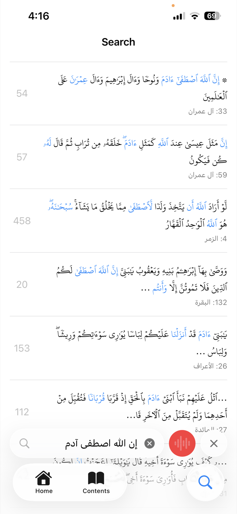

HifzGuide
Your Quran Memorization Companion
AI-powered recitation checker that listens as you read and gives you real-time, word-level feedback — entirely on your device.
Join the BetaYour Quran Memorization Companion
AI-powered recitation checker that listens as you read and gives you real-time, word-level feedback — entirely on your device.
Join the BetaEverything you need to perfect your Quran memorization
Just recite — HifzGuide follows along word by word and highlights your position in the mushaf in real time.

Get instant feedback on every word. Wrong words and tashkeel errors are detected and highlighted so you know exactly what to fix.

Made a mistake and corrected yourself? HifzGuide notices when you re-read and updates your score automatically.

Open any page in the mushaf and start reciting. Beautiful, authentic rendering with crisp glyph fonts — just like a printed Quran.

Track pages, surahs, and streaks. See quality ratings for every page — Perfect, Good, or needs review. Smart scheduling tells you which pages to revisit and when.


Search the Quran by typing Arabic text — or by reciting a verse aloud. Find any passage instantly.


All speech recognition runs locally on your iPhone using the Apple Neural Engine. Your recitation never leaves your device.
HifzGuide is currently in beta testing. Sign up to get early access via TestFlight and help shape the future of Quran memorization.
Sign Up for TestFlight